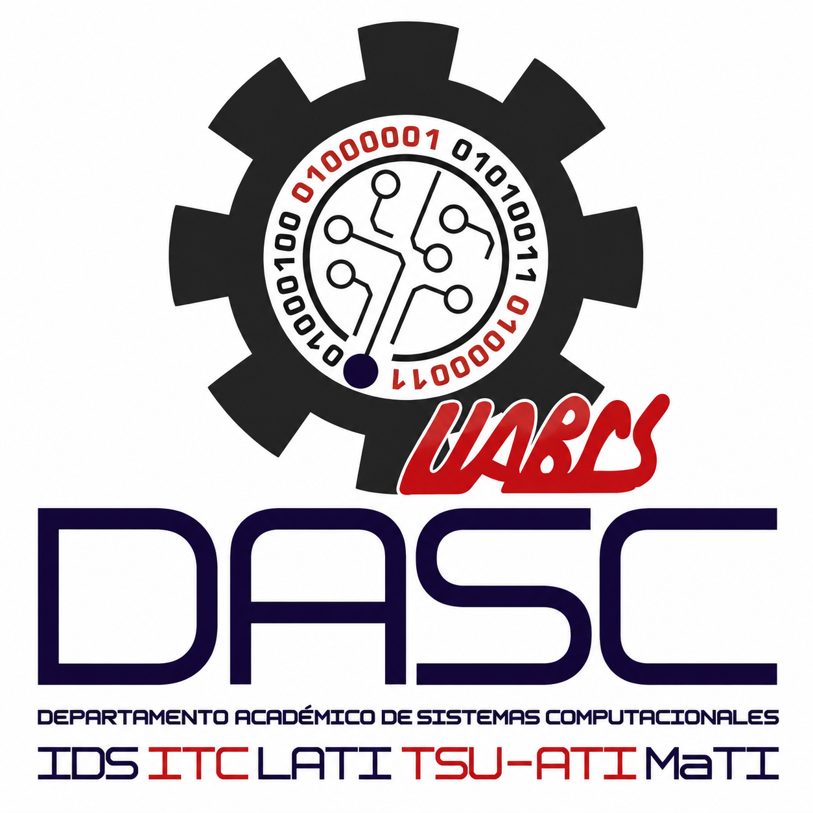
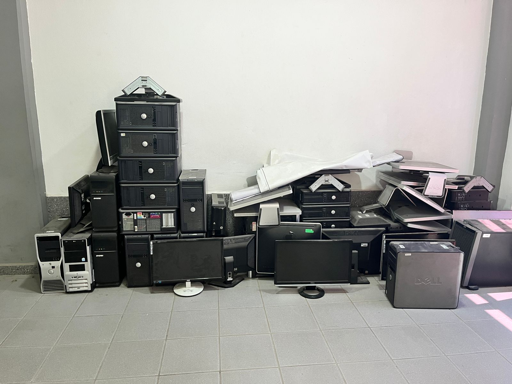
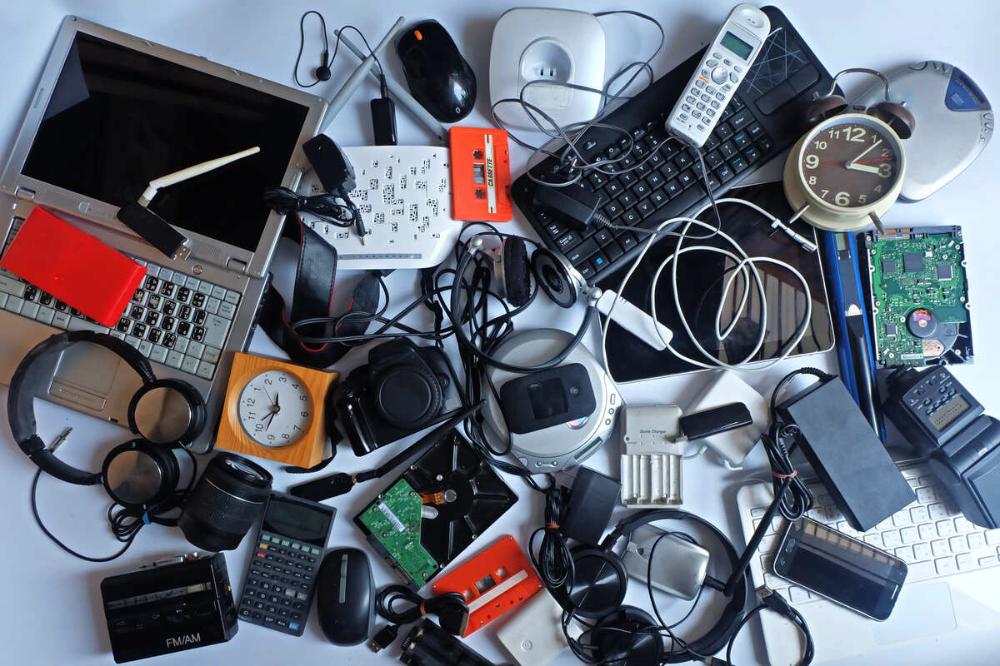
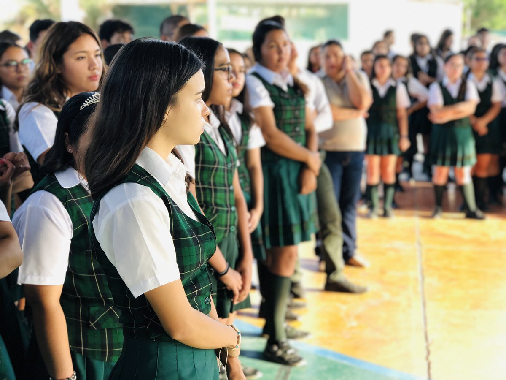
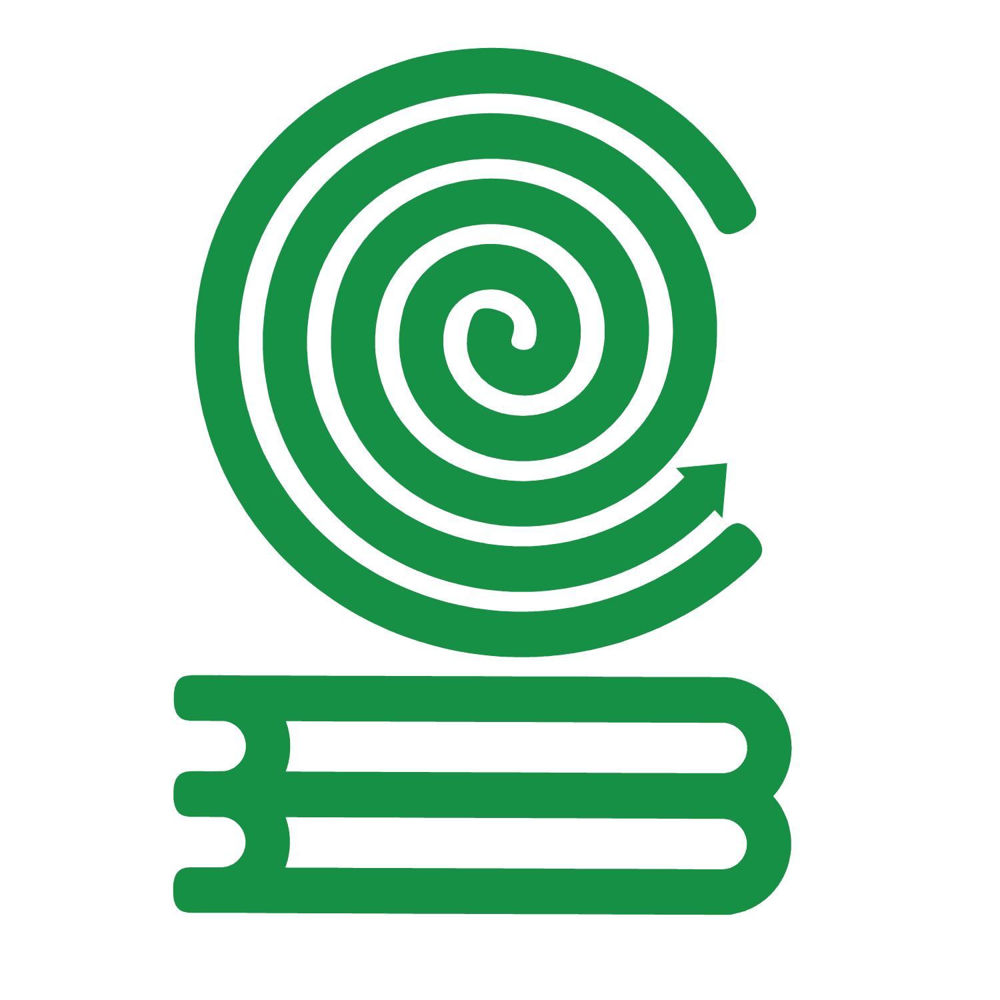
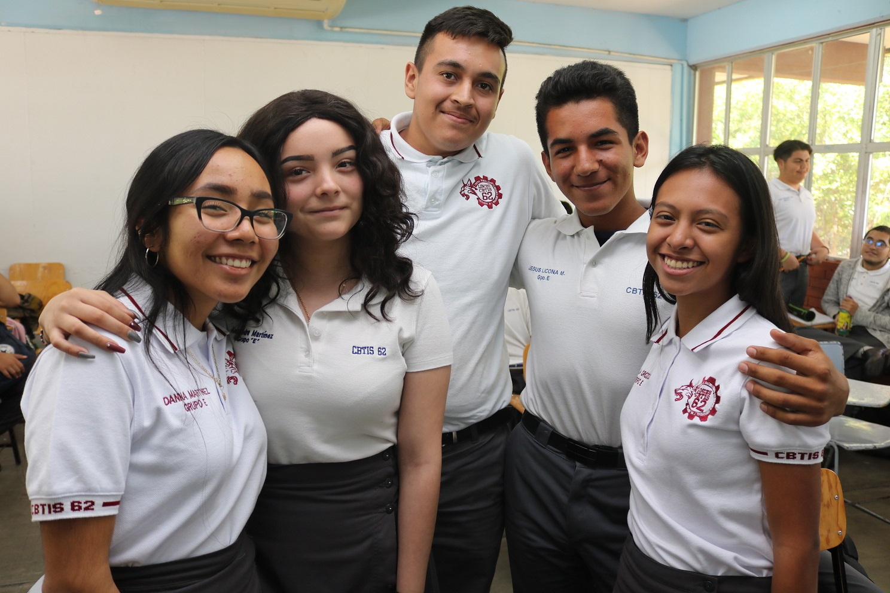
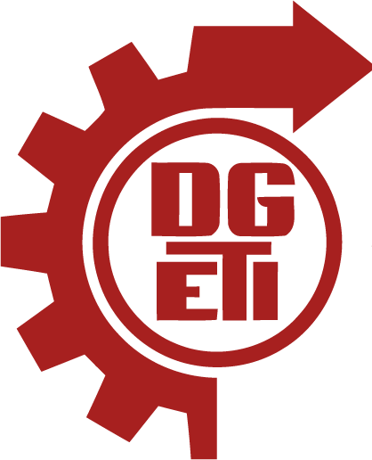
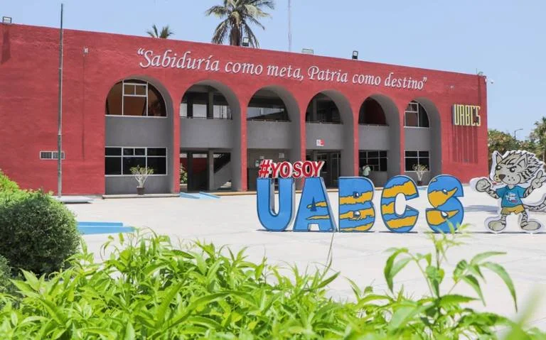
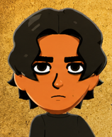

¿Por qué nuestro proyecto es Importante?

1 Propósito
Este proyecto empezó por algo que vemos mucho hoy en día, cada vez hay más computadoras y aparatos electrónicos se encuentran en condiciones de abandono. Aunque algunos de esos aparatos tienen las condiciones optimas para seguir funcionando, al mismo tiempo hay muchas personas que no disponen de los recursos para poder permitirse un equipo. De ahí surgió la idea de juntar dispositivos, arreglarlos y entregarlos a escuelas o personas que los necesiten.
2Justificación
Muchas veces se tiran computadoras o piezas electrónicas sin pensar que todavía pueden servir o repararse. Por eso, este proyecto busca aprovechar esos equipos para ayudar a personas que no tienen fácil acceso a la tecnología, al mismo tiempo que se reduce un poco la basura electrónica. Además, permite que estudiantes practiquen cosas relacionadas con mantenimiento y reparación de computadoras mientras apoyan a otras personas.
Objetivos

Recolección y recuperación de equipos electrónicos
Juntar computadoras, piezas y otros Aparatos Eléctricos y Electrónicos (AEE) que ya no se usen para revisar cuáles todavía pueden servir. La idea es aprovechar lo que aún funciona y evitar que termine siendo residuos o basura electrónica (RAEE), dándole un mejor uso a materiales que todavía pueden seguir siendo útiles.
Reparación y donación de equipos reacondicionados
Arreglar y dar mantenimiento a computadoras que todavía puedan recuperarse, ya sea limpiándolas, cambiando piezas o mejorando su funcionamiento. Después, los equipos que estén en buenas condiciones podrán entregarse a escuelas o personas que realmente los necesiten.
Participación estudiantil y conciencia ambiental
Invitar a estudiantes interesados en computadoras y tecnología a participar en el proyecto para que aprendan más sobre reparación y mantenimiento mientras ayudan a otras personas. Al mismo tiempo, se busca hacer conciencia sobre la cantidad de basura electrónica que se genera y la importancia de reutilizar antes de desechar.
¿Qué es la RAEE?
Son un reto importante para el sector del reciclaje, ya que en esta categoría se incluyen los residuos de muchos objetos cotidianos que inevitablemente quedan obsoletos o que en cualquier caso se descomponen y deben ser reemplazados y eliminados con relativa frecuencia.

Tipos de RAEE
- Grandes electrodomésticos: refrigeradores, lavadoras, estufas.
- Pequeños electrodomésticos: licuadoras, planchas, cafeteras.
- Informática y telecomunicaciones: celulares, computadoras, impresoras.
- Electrónica de consumo: televisores, consolas, radios
- Iluminación: focos y lámparas.
- Herramientas eléctricas: taladros, sierras.
- Juguetes electrónicos: drones, juguetes con batería.
- Equipos médicos y de control: sensores, termómetros.
Proceso
Recolección
Solamente cierto personal puede acceder a este sitio debido a que se debe garantizar que nadie saque beneficio propio de una campaña meramente filantrópica. El equipo recolectado no se mantiene simplemente almacenado así sin más, sino que luego de ser clasificado se separa para ser trabajado de forma más eficiente.
Diagnóstico y clasificación
No todo el equipo será procesado de la misma manera, así como alguien puede donar un equipo completo y totalmente funcional, puede donar equipo que requiere reparación, donar solamente periféricos, etc. Esto hace que se requiera de hacer una evaluación del equipo para clasificar y facilitar el trabajo posterior.
Reparación y ensamble
Una vez el equipo se tiene clasificado es más fácil saber qué hacer con cada cual, a medida que se vayan reparando los equipos en su totalidad y queden completamente ensamblados se mueven al área de donación.
Desechos
Al ser basura electrónica, el hardware que no pudo ser aprovechado debe ser desechado de forma correcta llevándolo a centros de acopio.
Donación
Aquí se almacena el equipo que está ya listo para ser donado en espera de ser llevado a alguna escuela, institución, etc.
Reclutamiento de Voluntariado y Participantes en el Programa


COBACH


CBTIS

UABCS
Roles del Voluntariado y Participantes del Programa.
1. Coordinador general del programa
Persona que supervisa el funcionamiento general del proyecto, toma decisiones importantes y mantiene comunicación con dirección y las instituciones beneficiadas del programa.
2. Encargado de inventario y almacenamiento
Administra las áreas donde se almacenarán los equipos, lleva registro de acceso a las distintas áreas que lo requieran , asegura las llaves de entrada y organiza entradas y salidas del equipo.
3. Responsable de recepción de equipo
Es quien(es) recibe(n) el equipo que traen los donantes, realizan una serie de cuestionamientos de procedimiento al donante al respecto del equipo donado y/o en su defecto realizan una prueba rápida en el equipo para poder almacenarlo en el lugar que le corresponda (equipo totalmente funcional, reparación específica, u obtención de piezas) y posteriormente volverlo a clasificar según el tipo de reparación requerida.
4. Coordinador de voluntariado
Organiza horarios, lleva registro y control de asistencias, actividades y distribución de tareas entre participantes. Los voluntarios deben acudir con él para poder ser admitidos (o no, dependiendo del nivel de conocimientos técnicos) al rol de voluntario reparador/ensamblador.
5. Supervisor de reparadores/ensambladores
Persona con mucho conocimiento al respecto de la reparación, mantenimiento y ensamble de equipo de cómputo. Supervisa procesos de mantenimiento, diagnóstico, reparación y reacondicionamiento de los equipos.
6. Responsable de vinculación institucional
Mantiene comunicación con dirección escolar de la UABCS, así como con escuelas, comunidades y organizaciones que recibirán las donaciones.
7. Encargado de difusión y redes sociales (Community Manager)
Administra publicaciones, campañas de difusión y reclutamiento en redes sociales. Realiza publicaciones al respecto de nuestro programa, instituciones beneficiadas, evidencias, fechas de determinados períodos de actividad o inactividad, así como horarios de recepción de equipo.
8. Equipo de reparación/ensamblaje
Integrado por voluntarios que se encargan del ensamblaje, reparación, y apoyo en general (limpieza y acondicionamiento de las distintas áreas). Estas personas serán clasificadas a su vez según se vea necesario por el supervisor de reparadores/ensambladores.
9. Encargado de transporte y entrega
Responsable de trasladar los equipos hacia las escuelas, instituciones o comunidades beneficiadas, asegurando que el material llegue en buenas condiciones y en los tiempos establecidos. Esta persona también transporta o dirige en su defecto al demás personal de instalación hacia el destino.
10. Equipo de instalación y soporte técnico
Se encarga de instalar los equipos donados en su lugar de destino, verificar su correcto funcionamiento y brindar apoyo básico a los usuarios sobre el uso adecuado de los equipos y recomendaciones de mantenimiento.
1. Coordinador general del programa
Persona que supervisa el funcionamiento general del proyecto, toma decisiones importantes y mantiene comunicación con dirección y las instituciones beneficiadas del programa.
2. Encargado de inventario y almacenamiento
Administra las áreas donde se almacenarán los equipos, lleva registro de acceso a las distintas áreas que lo requieran , asegura las llaves de entrada y organiza entradas y salidas del equipo.
3. Responsable de recepción de equipo
Es quien(es) recibe(n) el equipo que traen los donantes, realizan una serie de cuestionamientos de procedimiento al donante al respecto del equipo donado y/o en su defecto realizan una prueba rápida en el equipo para poder almacenarlo en el lugar que le corresponda (equipo totalmente funcional, reparación específica, u obtención de piezas) y posteriormente volverlo a clasificar según el tipo de reparación requerida.
4. Coordinador de voluntariado
Organiza horarios, lleva registro y control de asistencias, actividades y distribución de tareas entre participantes. Los voluntarios deben acudir con él para poder ser admitidos (o no, dependiendo del nivel de conocimientos técnicos) al rol de voluntario reparador/ensamblador.
5. Supervisor de reparadores/ensambladores
Persona con mucho conocimiento al respecto de la reparación, mantenimiento y ensamble de equipo de cómputo. Supervisa procesos de mantenimiento, diagnóstico, reparación y reacondicionamiento de los equipos.
6. Responsable de vinculación institucional
Mantiene comunicación con dirección escolar de la UABCS, así como con escuelas, comunidades y organizaciones que recibirán las donaciones.
7. Encargado de difusión y redes sociales (Community Manager)
Administra publicaciones, campañas de difusión y reclutamiento en redes sociales. Realiza publicaciones al respecto de nuestro programa, instituciones beneficiadas, evidencias, fechas de determinados períodos de actividad o inactividad, así como horarios de recepción de equipo.
8. Equipo de reparación/ensamblaje
Integrado por voluntarios que se encargan del ensamblaje, reparación, y apoyo en general (limpieza y acondicionamiento de las distintas áreas). Estas personas serán clasificadas a su vez según se vea necesario por el supervisor de reparadores/ensambladores.
9. Encargado de transporte y entrega
Responsable de trasladar los equipos hacia las escuelas, instituciones o comunidades beneficiadas, asegurando que el material llegue en buenas condiciones y en los tiempos establecidos. Esta persona también transporta o dirige en su defecto al demás personal de instalación hacia el destino.
10. Equipo de instalación y soporte técnico
Se encarga de instalar los equipos donados en su lugar de destino, verificar su correcto funcionamiento y brindar apoyo básico a los usuarios sobre el uso adecuado de los equipos y recomendaciones de mantenimiento.
Desechar los RAEE
Sabemos que no todo el material donado podrá ser reutilizado o reparado en su totalidad. Algunos componentes pueden encontrarse demasiado dañados, obsoletos o representar un riesgo para su funcionamiento seguro. Sin embargo, sería contradictorio desechar estos residuos de manera irresponsable, considerando que uno de los principales objetivos del programa no solo es contribuir a reducir la brecha digital, sino también disminuir el impacto ambiental ocasionado por los residuos de aparatos eléctricos y electrónicos (RAEE).
De la misma manera en que los equipos funcionales serán transportados a escuelas e instituciones que los necesiten, los residuos electrónicos serán llevados a centros de acopio y reciclaje especializados, donde puedan recibir un tratamiento correcto y responsable.
Nuestra Ubicación
Autores | Opiniones Personales

Deohvan Aguilar Ramirez
"Siendo completamente franco, considero que hay varias áreas de oportunidad en nuestro proyecto, ya que es una parte de un proceso que es 100% obligatorio, todos en su determinado tiempo van a tener que desechar algo, en este caso los dispositivos eléctricos y electrónicos."
Yaretzi Aguiar Salgado
"Las principales dificultades que se observan no es en hacer una investigación o una página web, es en la carencia de espacios, coordinación y herramientas para darle la oportunidad a este tipo de proyectos."
Raul Duarte Moreno
"El esfuerzo se trata de levantarse, aunque todo resulte sin propósito y tremendamente depresivo, de aprender para enseñar, y de generar abundancia para compartir."
Gael García Villegas
"Me gustaría agregar que el hecho de que existan iniciativas como la nuestra para combatir una problemática que cada vez se hace más grande, puede generar esperanza en una humanidad sustentable y acerca, aunque sea un poco, esta misma meta."